Artículo de ejemplo
Por qué te duele la rodilla y no es culpa de la rodilla
La altura del sillín, el retroceso y la posición de la cala explican la mayoría de las molestias que traen los ciclistas al estudio.
LeerMaqueta de propuesta para Motionlab Studio · G&G Elcano · Los textos e imágenes de Tienda y Blog son de ejemplo, pendientes de los definitivos de Motionlab.
Centro de biomecánica ciclista y entrenamiento personal en Durango. Bikefitting con los tres sistemas más avanzados del mercado: Retül, gebioMized y Shimano.
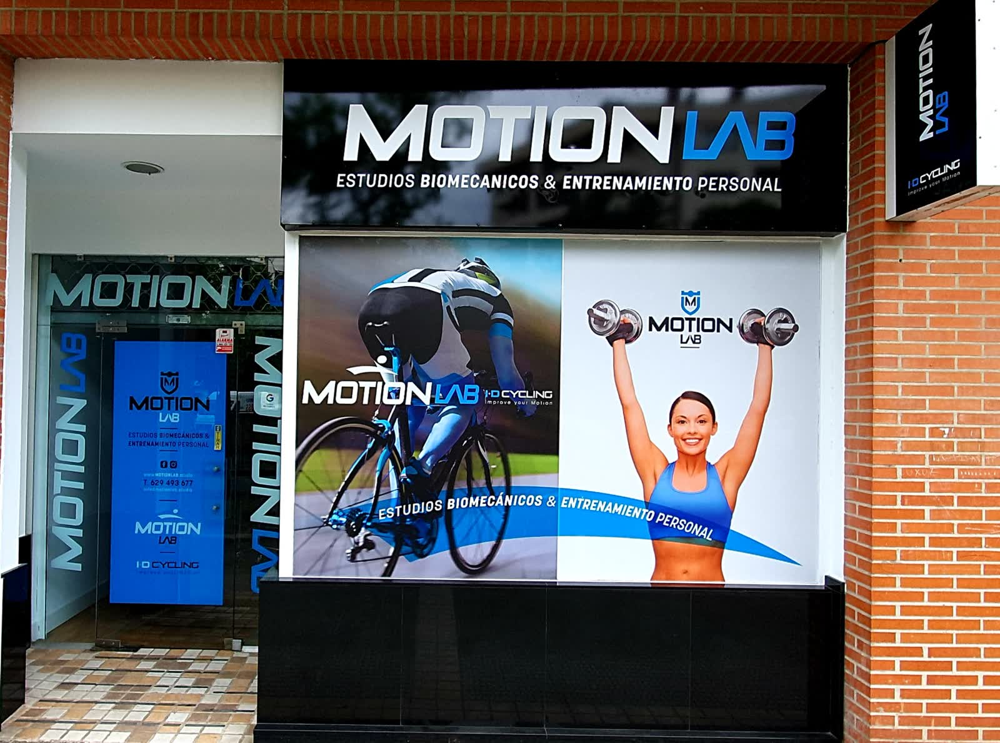
Origen
Motionlab Studio es un moderno y tecnológicamente avanzado centro de biomecánica ciclista y de entrenamiento personal en Durango.
Los amantes del ciclismo disfrutan aquí de los servicios más completos de bikefitting —precompra, estudio biomecánico, análisis de pedaleo con cálculo de fuerzas y torque— además de planificaciones y entrenamientos personalizados.
El entrenamiento personal está dirigido tanto a deportistas que compiten como a practicantes de fitness y a personas con lesiones o en periodo de readaptación. Los entrenamientos se realizan de manera absolutamente personalizada.
Sistemas de bikefitting
Cada sistema mide una cosa distinta: la posición, las presiones y las fuerzas. Usarlos juntos es lo que convierte un ajuste en un diagnóstico.

Los sensores del sistema Retül recogen las mediciones desde múltiples ángulos y en tres dimensiones, con el ciclista pedaleando de verdad. El ajuste dinámico es el que más garantías ofrece, y la precisión es milimétrica.
Mediante una funda flexible con 64 sensores, el sistema detecta la distribución de presiones sobre el sillín y los puntos de desequilibrio de la pedalada. Un diagnóstico fiable basado en medir, no en suponer.

Mide la potencia producida y la dirección de la fuerza aplicada al pedal cada 7 grados de la revolución de la biela, por separado en cada pierna. Muestra cuánta de tu fuerza se aprovecha y cuánta se pierde.
Servicios
Cada deportista es diferente y cada uno tiene unas necesidades. Ese es el punto de partida de cualquier intervención.
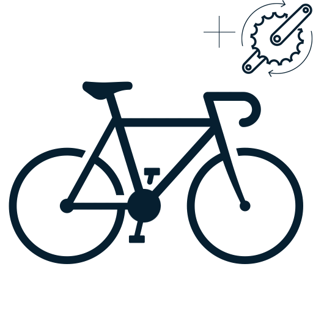
Análisis exhaustivo de la técnica sobre la bicicleta para que sea estable, no lesiva y lo más eficiente posible. Se ajustan la bicicleta y sus componentes a las características del deportista.
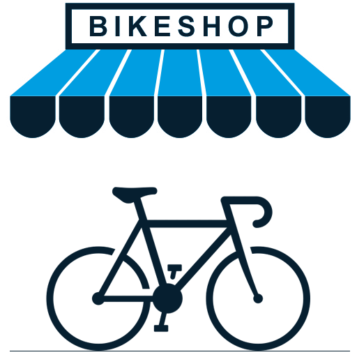
Antes de comprar la bicicleta, se determinan la talla y la geometría que de verdad te corresponden. Evita el error más caro del ciclismo: una bicicleta que nunca te va a encajar.
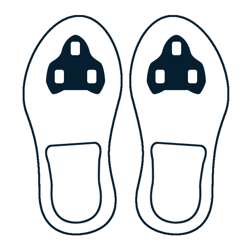
Diagnóstico de presiones para optimizar la unión entre el pie y el pedal. Ajuste milimétrico de calas y plantillas para estabilizar la pisada y repartir bien la carga.

Medición de las fuerzas aplicadas al pedal a lo largo de toda la revolución, con datos independientes para cada pierna. Eficiencia real, medida, no estimada.
Sesiones uno a uno en el estudio, con valoración previa. Fuerza, core y readaptación funcional adaptados a tu momento.
Planificación y seguimiento a distancia para quien entrena por su cuenta pero no quiere hacerlo a ciegas.
Para practicantes de fitness y para personas con lesiones o en periodo de readaptación. No hace falta competir para entrenar bien.
Tienda
Dos marcas escogidas por criterio técnico, no por catálogo. Se ven, se prueban y se consultan en el estudio.
Calzado de ciclismo con hormas anchas y termomoldeables. La zapatilla correcta es la continuación natural de un buen ajuste de calas.
Nutrición deportiva para entrenamiento y competición. Qué tomar, cuánto y cuándo se decide con el plan de entrenamiento delante.
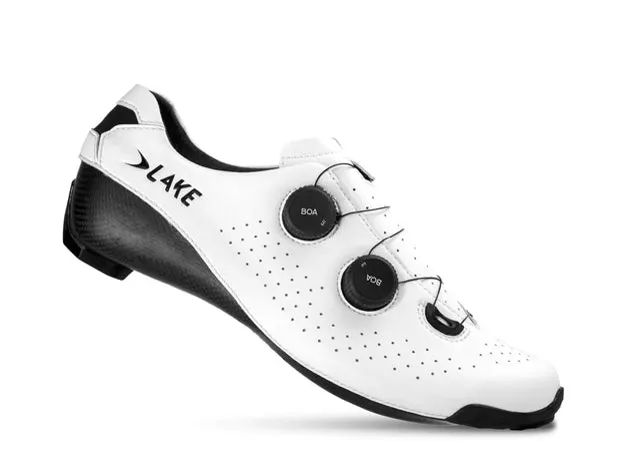
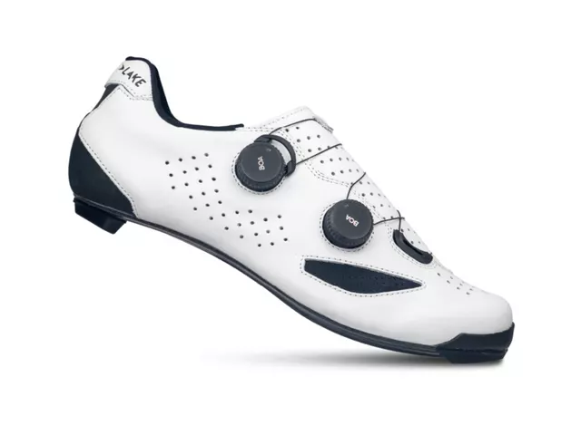
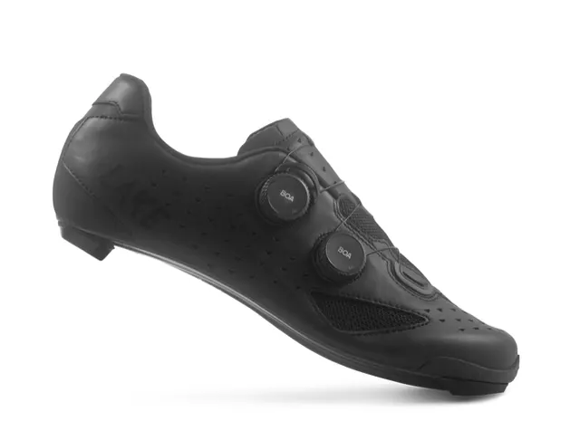
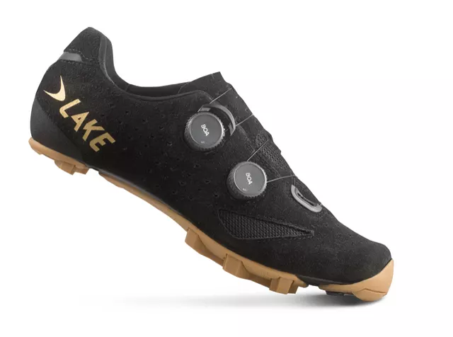
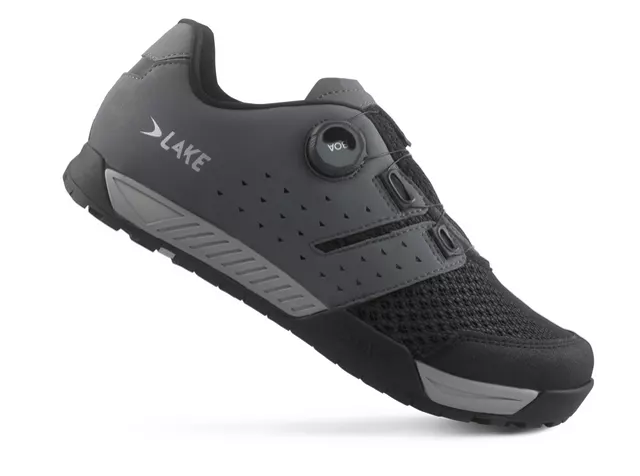
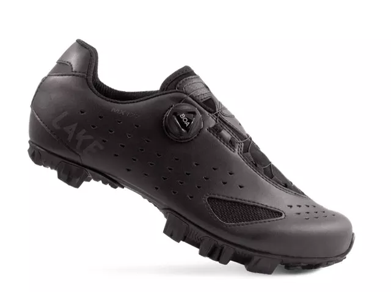
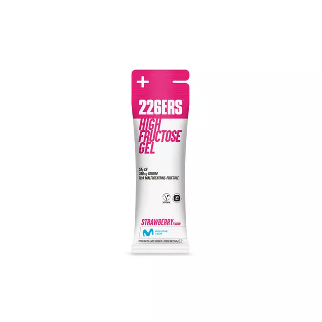
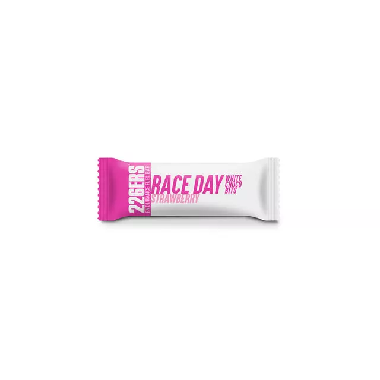
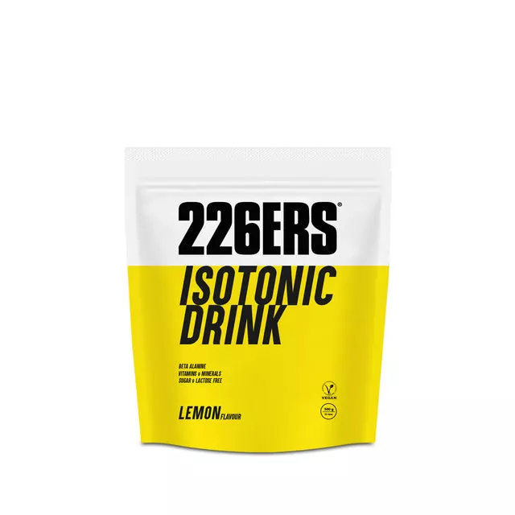
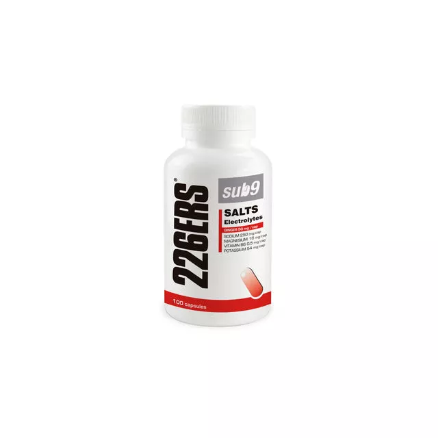
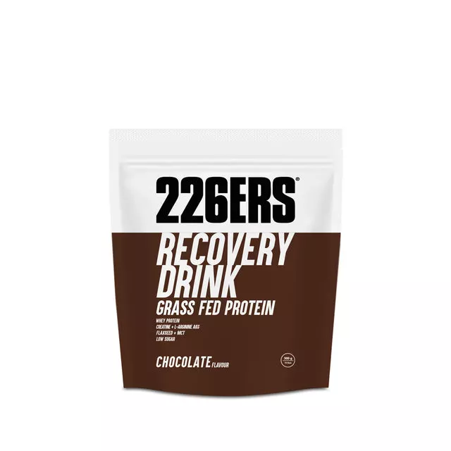
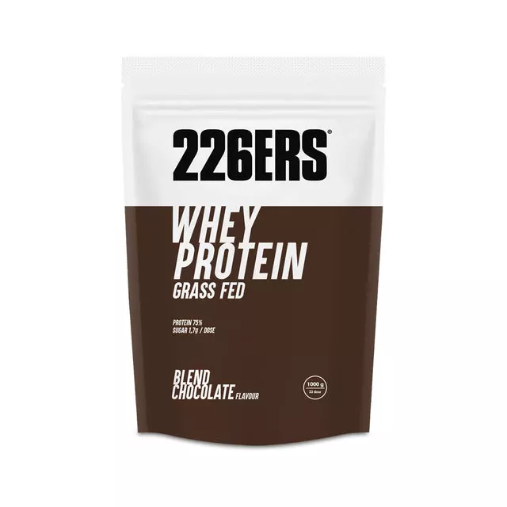
Escaparate: los productos se consultan y se compran en el estudio o por WhatsApp. No hay carrito ni pagos en la web, así que no hay stock ni precios que mantener al día. Los productos mostrados son una muestra del catálogo oficial de cada marca; la selección definitiva la decide Motionlab.
Blog
Lo que se aprende midiendo a cientos de ciclistas, contado sin humo.
La altura del sillín, el retroceso y la posición de la cala explican la mayoría de las molestias que traen los ciclistas al estudio.
LeerDos bicicletas de la misma talla pueden pedir posiciones muy distintas. Qué mirar antes de gastarse el dinero.
LeerQué mide de verdad un analizador de pedaleo 3D y qué se puede hacer con esos datos cuando vuelves a la carretera.
LeerLos tres artículos son un ejemplo de cómo se verían. Los títulos y los textos definitivos los escribe Motionlab; la web queda preparada para ir publicando.
Preguntas frecuentes
Consiste en realizar un exhaustivo análisis de la técnica del deportista con el objetivo de que ésta sea estable, no lesiva y acerque al deportista a parámetros de eficiencia máxima. Para ello la premisa fundamental es ajustar en la mayor medida posible la bicicleta y sus componentes a las características y necesidades del deportista.
Principalmente sirve para prevenir lesiones derivadas de patrones de movimiento repetitivos y no adecuados. La prevención de lesiones en el deporte es vital, ya que hace que la práctica sea segura y perdure en el tiempo.
Ir bien posicionado sobre la bicicleta permite además tener un rendimiento mucho mayor, bien porque la aplicación de fuerza es más efectiva, bien porque se mejora en parámetros relacionados con la resistencia al avance como la aerodinámica.
Cada deportista es diferente y cada uno tiene unas necesidades: ese es el principal punto de partida. La intervención se orienta en base a tres situaciones tipo, que en la mayoría de los casos se dan al unísono, aunque en ocasiones haya que priorizar una de ellas.
Entrevista inicial sobre historial deportivo, lesiones y objetivos; valoración biomecánica de flexibilidad, asimetrías y rangos articulares; análisis dinámico sobre el rodillo con captura tridimensional; y por último ajuste sobre la bicicleta y validación con una segunda medición.
Un informe completo con las mediciones tomadas, los cambios realizados y las cotas finales de tu bicicleta, para que puedas reproducir la posición en cualquier momento.
Sí. Tras el estudio hay seguimiento posterior para comprobar cómo responde el cuerpo a la nueva posición y hacer los reajustes que hagan falta.
Contacto
El estudio se reserva con cita previa. Escríbenos por WhatsApp y te decimos hueco y qué traer.